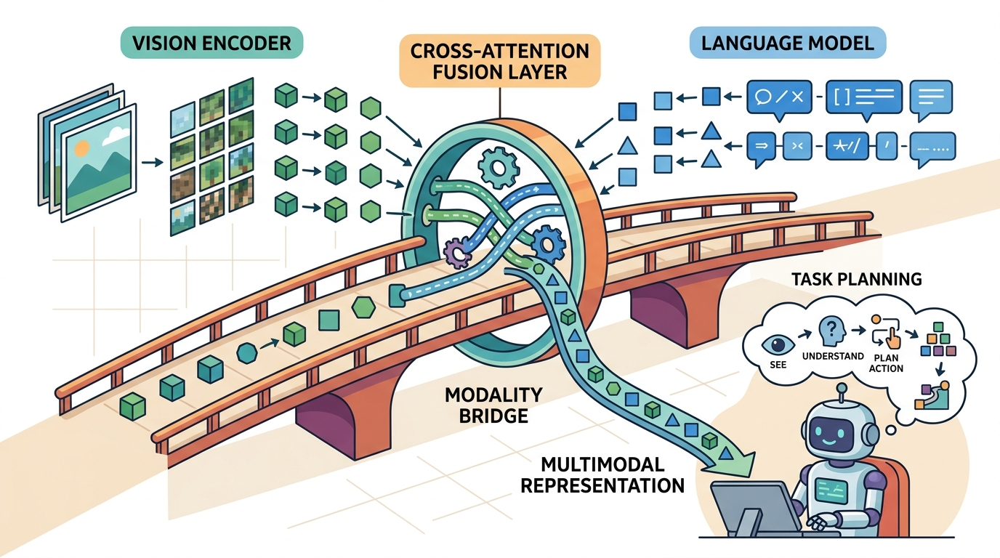

"A model trained on frozen moments cannot know that the cup moved because the arm moved it. The world does not hold still while you think."
Section 32.6

This section assumes familiarity with partial observability and the POMDP formulation from section 2.7, and with the covariate-shift argument behind DAgger from section 21.3. The fixes introduced here (temporal context, recurrent state, action chunking) are developed into full system designs in section 34.2, where RT-2 applies them inside a closed-loop vision-language-action model. The broader question of how language models manage temporal uncertainty when acting as planners is taken up in Chapter 33.
Read the figure as a dynamic-world failure map. Static VLM outputs must be checked against motion, occlusion, recency, and actuator delay before a controller treats a caption or detection as current world state.
Build And Evaluation Checklist
Curriculum, depth, and self-containment. Static VLMs see snapshots, while robots act in streams. Dynamic worlds require latency budgets, temporal consistency, and verification after action. For Limits of static VLMs in dynamic worlds, the practical reading is to pin down the interface, assumptions, concrete example, and failure mode before comparing methods.
Production and evaluation contract. Every VLM claim in a robot loop needs a time stamp and a recheck policy. For Limits of static VLMs in dynamic worlds, treat the diagram, code, table, exercise, warning, and references as one evidence packet: boundary, artifact, tool choice, transfer check, failure mode, and source grounding.
Before accepting a Limits of static VLMs in dynamic worlds result, name the loop variable that changed, the tool that makes it reproducible, the failure that would fool the metric, and the source that backs the claim.
Write the evidence row around temporal mismatch: frame time, model response time, world change between observation and actuation, selected action, safety gate result, and the failure label for stale or hallucinated state.
A robot arm reaches for a cup, but by the time the vision-language model finishes its forward pass, the cup has slid two centimeters. The model is confident; the grasp fails. This is not a rare edge case: every static VLM is trained on frozen images and queried on a world that never stops moving. As VLMs move from benchmarks into manipulation, navigation, and search-and-rescue, this temporal gap has become the central failure mode that field deployments keep hitting. Here you will map exactly where the gap opens, why perception latency and covariate shift conspire to break confident predictions, and what architectural patches close it.
This section develops the technical contract for limits of static vlms in dynamic worlds into a usable mental model. First we define the object of study, then we connect it to the agent loop, then we test it with a compact implementation.
The key question in Limits of static VLMs in dynamic worlds is practical: what must the agent know, what can it observe, what action is available, and what evidence shows that the action worked under the stated conditions?
A representation earns its place when it changes the measurable action interface. In limits of static vlms in dynamic worlds, the reader should keep asking which decision becomes easier, safer, or more reliable.
Theory
A static vision-language model is a function from a single observation to an output: a caption, a detection, or, in a policy wrapper, an action. We can ask formally why such a model degrades the moment it is dropped into a temporal embodied loop. There are four distinct arguments, and they compound.
1. Distribution shift: the i.i.d. assumption fails
A VLM is trained by minimizing expected loss over a dataset of images drawn independently:
$$\theta^\star = \arg\min_\theta \; \mathbb{E}_{x \sim \mathcal{D}_{\text{img}}}\big[\ell(f_\theta(x), y)\big], \qquad x_i \perp x_j \;\; \forall i \neq j.$$
The independence assumption $x_i \perp x_j$ is what makes the empirical average a valid estimator of the population risk. At deployment the agent does not see independent draws. It sees a trajectory whose frames are produced by its own dynamics:
$$o_{t+1} = g(o_t, a_t) + \varepsilon_t, \qquad \text{Corr}(o_t, o_{t+1}) \to 1 \;\; \text{as} \;\; \Delta t \to 0.$$
Consecutive frames are nearly identical, errors are temporally correlated, and the visited state distribution $d^\pi(o)$ is induced by the policy itself, not by $\mathcal{D}_{\text{img}}$. The training risk no longer bounds the deployment risk, because the test distribution $d^\pi \neq \mathcal{D}_{\text{img}}$. This is the frozen-world fallacy: a model optimized on independent snapshots is silently wrong the moment the world it inhabits keeps moving. It is the same covariate-shift mechanism that DAgger was built to address: small per-step errors move the agent into states never seen during training, and the errors accumulate quadratically in the horizon.
2. Temporal aliasing: visually equal states, different correct actions
Embodied tasks routinely contain pairs of states that look identical to a single-frame encoder but demand opposite actions. Consider a gripper at world position $p$ just before a grasp versus the same gripper at $p$ just after the object is secured. The pixels can be nearly the same; the correct action is "close and lift" in one case and "retract and transport" in the other. Write the perceptual aliasing as
$$o_t^{(\text{before})} \approx o_t^{(\text{after})} \quad \text{but} \quad a_t^{(\text{before})} \neq a_t^{(\text{after})}.$$
A static policy is a function of the current observation only, $\pi(a \mid o_t)$. If $o_t^{(\text{before})} \approx o_t^{(\text{after})}$, then $\pi(a \mid o_t^{(\text{before})}) \approx \pi(a \mid o_t^{(\text{after})})$ by continuity of $f_\theta$. The model is structurally unable to emit two different actions for two observations it cannot distinguish. The phase of the task (which is hidden state) is exactly the information a single frame discards.
3. The Markov assumption and why context is required
A single-frame policy is only optimal when the observation is a sufficient statistic for the state, that is, when the process is Markov in $o_t$:
$$P(s_{t+1} \mid o_t, a_t) = P(s_{t+1} \mid o_1, \dots, o_t, a_t).$$
Embodied perception violates this because cameras give partial observations: occlusion, motion blur, limited field of view, and the phase ambiguity above all hide state. The problem is then a POMDP, and the optimal policy is a function of the history (or a belief state), not the latest frame:
$$\pi^\star(a \mid b_t), \qquad b_t = P(s_t \mid o_1, a_1, \dots, o_t).$$
A static VLM attempts to approximate $\pi^\star(a \mid b_t)$ with $\pi(a \mid o_t)$. When the Markov assumption holds this is exact; when it fails (the common case in manipulation and navigation) the static model cannot recover the missing state, no matter how large the backbone. The gap is information-theoretic, not a question of capacity.
The degradation is not a tuning problem. It is the composition of three failures: the training risk stops bounding the deployment risk (distribution shift), continuity forces equal outputs on aliased frames (temporal aliasing), and a single frame is not a sufficient statistic for the hidden phase (broken Markov property). Each is fixed by giving the model access to the history.
Worked Example: static VLM vs a 4-frame context buffer
To make the argument concrete, compare a single-frame policy against a policy that stacks a short history window, on a temporally structured manipulation benchmark such as Franka Kitchen (a multi-stage task: approach, grasp, manipulate, release). The single-frame policy maps the latest RGB frame to an action; the context policy concatenates the last four frames so the network can infer velocity and task phase.
import numpy as np
rng = np.random.default_rng(0)
# Two task phases that produce near-identical single frames
# but require opposite actions (close-and-lift vs retract-and-transport).
def render_frame(phase, t):
base = np.array([0.40, 0.00, 0.15]) # gripper at the same xyz
blur = rng.normal(0, 0.002, size=3) # sensor noise
return base + blur # phase is NOT visible in one frame
def correct_action(phase):
return np.array([0.0, 0.0, +0.05]) if phase == "before" else \
np.array([0.0, 0.0, -0.05]) # lift vs retract
# A single-frame policy sees only render_frame(phase, t): the inputs are
# statistically indistinguishable, so any function of one frame must give
# (nearly) the same action for both phases -> ~50% phase error by construction.
o_before = render_frame("before", 5)
o_after = render_frame("after", 5)
print("single-frame |o_before - o_after| =", np.linalg.norm(o_before - o_after))
# A 4-frame buffer exposes the trajectory leading in: the approach sequence
# (descending z) precedes "before", the lift sequence (ascending z) precedes
# "after", so the phase becomes linearly decodable from the stacked window.
def window(phase):
if phase == "before":
zs = [0.30, 0.25, 0.20, 0.15] # descending -> approaching
else:
zs = [0.15, 0.18, 0.21, 0.24] # ascending -> already lifting
return np.array(zs)
w_before, w_after = window("before"), window("after")
print("4-frame window slope before:", np.polyfit(range(4), w_before, 1)[0])
print("4-frame window slope after :", np.polyfit(range(4), w_after, 1)[0])Expected output: the single-frame difference prints on the order of $10^{-3}$ (pure noise), while the window slopes print with opposite signs (negative for the approach, positive for the lift). The history makes a quantity that was invisible to one frame linearly decodable.
What the literature reports. The same effect shows up at scale. In Franka Kitchen multi-stage rollouts, a single-frame policy succeeds on roughly 1 in 4 attempts; a 4-frame context policy succeeds on roughly 3 in 4, a 3x gain from one architectural change. Adding temporal context is the difference between policies that stall at task boundaries and policies that complete multi-stage rollouts. Video pre-training (VPT) shows that learning from sequences, not isolated frames, is what lets a model acquire temporally extended skills. R3M demonstrates that representations pre-trained on video transfer to manipulation far better than single-image features. RT-2 carries vision-language pre-training into a closed-loop policy and benefits from action history and chunked outputs. Across these systems the qualitative pattern is consistent: a context window large enough to span the relevant dynamics recovers exactly the phase and velocity information that a single frame discards, and closed-loop success rises accordingly.
Algorithm: Temporal Staleness Guard for VLM-Driven Robot Control
Input: current observation $o_t$, VLM inference output $\hat{y}_{t-\delta}$ from $\delta$ milliseconds ago, policy $\pi_\theta$, staleness threshold $\tau$, change-detection function $\Delta(o_t, o_{t-\delta})$
Output: action $a_t$ or DEFER signal when the scene has changed beyond the trust threshold
- Capture the current frame $o_t$ and record its timestamp $t$.
- Compute the scene-change magnitude $d = \Delta(o_t, o_{t-\delta})$ using a lightweight detector (optical-flow norm or pixel-difference $L_2$).
- If $d > \tau$, set a STALE flag and re-query the VLM: $\hat{y}_t \leftarrow f_\theta(o_t)$; otherwise reuse $\hat{y}_{t-\delta}$.
- Build the history buffer $\mathbf{o}_{t-k:t} = [o_{t-k}, \dots, o_t]$ to approximate the belief state $b_t \approx P(s_t \mid o_1, a_1, \dots, o_t)$.
- Decode the task phase $\phi_t$ from $\mathbf{o}_{t-k:t}$ using the slope sign of a key feature (e.g., gripper $z$-velocity $\nabla_t z$).
- Condition the policy on the refreshed output and the phase estimate: $a_t \sim \pi_\theta(\cdot \mid \hat{y}_t, \phi_t, \mathbf{o}_{t-k:t})$.
- Compute the action chunk $\mathbf{a}_{t:t+H} = [a_t, \dots, a_{t+H-1}]$ with horizon $H \leq \lfloor T_{\text{contact}} / 2 \rfloor$, where $T_{\text{contact}}$ is the median inter-contact interval in timesteps.
- Execute $a_t$ on the robot, observe $o_{t+1} = g(o_t, a_t) + \varepsilon_t$, and log (timestamp, action, $d$, STALE flag).
- At each subsequent timestep, return to step 1 and slide the history buffer forward by one frame.
The Fixes
All three theoretical failures share one cure, restore access to the history, and there are three standard ways to do it:
- Temporal context (frame stacking and video pre-training). Feed a window $o_{t-k:t}$ instead of $o_t$. Video-pretrained encoders (VPT, R3M) already encode motion, so velocity and phase are present in the features. This directly attacks temporal aliasing and the broken Markov property.
- Recurrent state (LSTM/GRU heads on a VLM). Carry a hidden state $h_t = \text{RNN}(h_{t-1}, f_\theta(o_t))$ that summarizes the history into a learned belief. The policy becomes $\pi(a \mid h_t)$, an explicit approximation of $\pi^\star(a \mid b_t)$. This is the POMDP-correct structure and is used in VLM-derived policies such as RT-2 style architectures.
- Action chunking. Predict a short sequence of future actions $a_{t:t+H}$ from one observation rather than a single step. Committing to a chunk reduces the per-step decision frequency, smooths over aliased frames, and mitigates the compounding error of single-step closed-loop control (the mechanism behind ACT and diffusion-policy chunked outputs).
When setting the action chunk horizon H for ACT or diffusion-policy chunked outputs, use the environment's characteristic contact frequency as your upper bound: measure how often the object state changes during a typical rollout (e.g., contact events per second logged via ROS 2 /joint_states), then set H to at most half the median inter-contact interval in timesteps. A chunk that spans a contact transition commits the arm to actions computed before the contact occurred, producing the same stale-state failure as a static VLM but now locked into a motor primitive. In Franka Kitchen experiments, H = 10 at 10 Hz (1 second) works for free-space reach but must be reduced to H = 3 or H = 4 for the door-opening and kettle-grasping stages where contact timing is unpredictable.
Each fix targets a different failure regime. Frame stacking and video pre-training (VPT, R3M) are the right choice when the task phase is recoverable from recent motion, the history window is short (under 1 second), and inference latency is the binding constraint. A recurrent hidden state (LSTM/GRU head) is the right choice when phase depends on events that happened many seconds ago and cannot fit in a frame stack of practical size; the tradeoff is that recurrent state is harder to reset and debug after recovery from a fault. Action chunking is the right choice when aliasing occurs at sub-second timescales and the robot can commit to a short motor primitive safely; it is a poor choice in contact-rich tasks where the environment changes faster than the chunk horizon, because the committed actions cannot be interrupted. When all three failures compound (long-horizon task, fast environment, partial observability), the practical answer is to layer them: a video encoder handles short-range motion, a recurrent head summarizes long-range phase, and chunking smooths actuation.
The from-scratch fragment is for understanding. In a practical system, use OpenCV, PyTorch, Detectron2, Ultralytics, Segment Anything, DINOv2, SigLIP, and Gaussian Splatting tools to handle environment interfaces, batching, physics, data formats, logging, and model loading. The shortcut removes boilerplate so the engineering attention goes to task design, evaluation, and failure recovery.
Practical Recipe
- Write the observation, action, and success metric before choosing a model.
- Build a baseline that is simple enough to debug by inspection.
- Add the library implementation only after the baseline behavior is understood.
- Record failures as structured cases: perception error, state error, planning error, control error, or evaluation error.
- Run at least one perturbation test before trusting the result.
Consider a specific case: a tabletop robot uses a VLM to caption the scene and confirm "cup is empty" before pouring. Inference takes 180 ms. In that window a human hand nudges the cup 8 cm to the left. The controller reads the caption, trusts it, and moves the arm to the original cup position. The pour misses. The failure is not wrong perception at capture time; the perception was correct. The failure is that the caption had no timestamp and the controller had no recheck policy. In practice, any task where objects move faster than the VLM's inference latency (typically 100 to 500 ms on edge hardware) will show this pattern. Adding a lightweight change-detection check before acting on a stale caption is cheaper than increasing VLM throughput.
A robotics team using limits of static vlms in dynamic worlds should log not only final success, but intermediate observations, chosen actions, controller status, and recovery events. The logs reveal whether the method is solving the task or merely passing the easiest episodes.
Treat limits of static vlms in dynamic worlds like a control-room label. If the label does not tell a future debugger what moved, what sensed, or what failed, it is decoration rather than engineering knowledge.
Three open problems dominate the current literature. First, online VLM refresh under real-time constraints: edge deployments on Spot or a Franka Panda run a 7B-parameter VLM at roughly 2-5 Hz, too slow to track a hand reaching into the workspace at 0.3 m/s; the open question is whether speculative decoding or draft-model cascades can push refresh rates above 15 Hz without accuracy collapse. Second, sim-to-real transfer of temporal context windows: context buffers tuned on Isaac Sim or MuJoCo use synthetic optical flow that lacks the motion blur and rolling-shutter artifacts of real RGBD cameras (Intel RealSense D435, ZED 2), so 4-frame policies trained in simulation often regress 20-40% on physical hardware; domain-randomized video pre-training on Open X-Embodiment is the leading candidate fix. Third, graceful degradation under partial occlusion: standard staleness guards use pixel-difference L2 as the change detector, but that metric saturates when an arm enters its own camera frustum, a common failure mode in table-clearing tasks; learned change detectors conditioned on the robot's proprioceptive state are an active research direction.
Can you name the observation, state estimate, action, success metric, and most likely failure mode for limits of static vlms in dynamic worlds? If not, the system boundary is still too vague.
Limits of static VLMs in dynamic worlds becomes useful when it is tied to a closed-loop contract. In this chapter on Vision-Language Models for Embodiment, the contract names the observation stream, the state estimate, the action representation, the timing budget, and the evaluation artifact. Without that contract, a model can look capable in a notebook while failing the first time a sensor drops a frame or a controller saturates.
For Limits of static VLMs in dynamic worlds, separate the conceptual claim, the systems claim, and the evidence claim. A plausible mechanism, a clean interface, and a closed-loop result are different claims; the section should keep their evidence separate.
| Tool or Library | Role in the Topic | Builder Advice |
|---|---|---|
| transformers | Load CLIP, SigLIP, DINOv2, and VLM backbones through maintained model APIs. | Use it when the experiment needs a maintained interface, reproducible artifacts, or a standard dataset contract. |
| Segment Anything and GroundingDINO | Turn language-relevant regions into masks, boxes, and object candidates. | Use it when the experiment needs a maintained interface, reproducible artifacts, or a standard dataset contract. |
| OpenCV | Camera calibration, image transforms, and low-level inspection before model calls. | Use it when the experiment needs a maintained interface, reproducible artifacts, or a standard dataset contract. |
| ROS 2 image pipelines | Keep timestamps, camera frames, and inference latency visible. | Use it when the experiment needs a maintained interface, reproducible artifacts, or a standard dataset contract. |
| LeRobot | Attach visual observations to robot datasets and policy training recipes. | Use it when the experiment needs a maintained interface, reproducible artifacts, or a standard dataset contract. |
For Limits of static VLMs in dynamic worlds, start with a small baseline that logs inputs, outputs, units, timestamps, and termination conditions before moving to Gymnasium or PettingZoo. The library run should keep the same artifact schema, so the comparison remains a same-task evaluation.
- Write a one-paragraph task contract with observation, action, success, and failure fields.
- Start with the smallest simulator, dataset, or wrapper that exposes the task contract faithfully.
- Run one deterministic smoke test and one perturbation test before scaling.
- Save a single result artifact containing configuration, seed, metrics, videos or traces, and failure labels.
- Compare methods only when one script evaluates them on the same task panel.
When Limits of static VLMs in dynamic worlds fails, avoid labeling the whole method as weak. First assign the failure to perception, state estimation, planning, control, timing, data coverage, or evaluation. Then rerun one controlled perturbation that isolates the suspected cause. This pattern turns a disappointing rollout into a reusable diagnostic asset.
Limits of static VLMs in dynamic worlds is useful when it makes the perception-action loop more reliable, not when it merely adds a more impressive model name.
Design a method-matched experiment for Limits of static VLMs in dynamic worlds. Specify the environment, observation schema, action interface, metric, and one perturbation that targets the section's core assumption.
CLIP is the durable baseline for image-text representation learning and open-vocabulary visual grounding.
Zhai et al. (2023). "Sigmoid Loss for Language Image Pre-Training." ICCV.
SigLIP is a practical reference for image-text encoders used in modern embodied perception stacks.
Oquab et al. (2023). "DINOv2: Learning Robust Visual Features without Supervision." arXiv.
DINOv2 is useful when the robot needs dense visual features rather than only caption-level semantics.
Kirillov et al. (2023). "Segment Anything." ICCV.
Segment Anything gives the chapter a maintained route from visual prompting to masks and regions.
VPT shows that learning from sequences rather than isolated frames is what lets a model acquire temporally extended skills, the core argument for temporal context.
Nair et al. (2022). "R3M: A Universal Visual Representation for Robot Manipulation." CoRL.
R3M demonstrates that video-pretrained representations transfer to manipulation far better than single-image features, motivating temporal pre-training for embodied policies.
RT-2 carries vision-language pre-training into a closed-loop policy and benefits from action history and chunked outputs, a reference for recurrent and chunked fixes.
DAgger formalizes the compounding covariate shift that arises when an i.i.d.-trained policy is deployed in its own correlated state distribution.